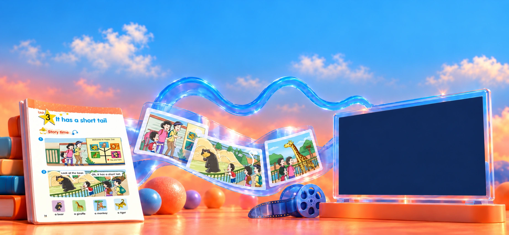
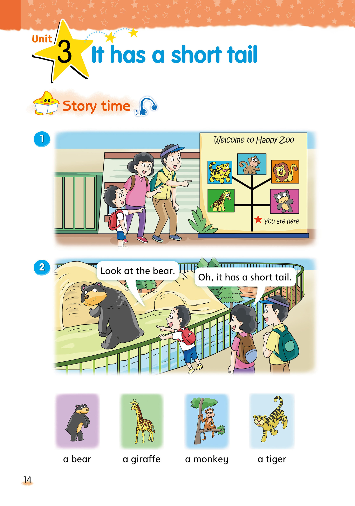
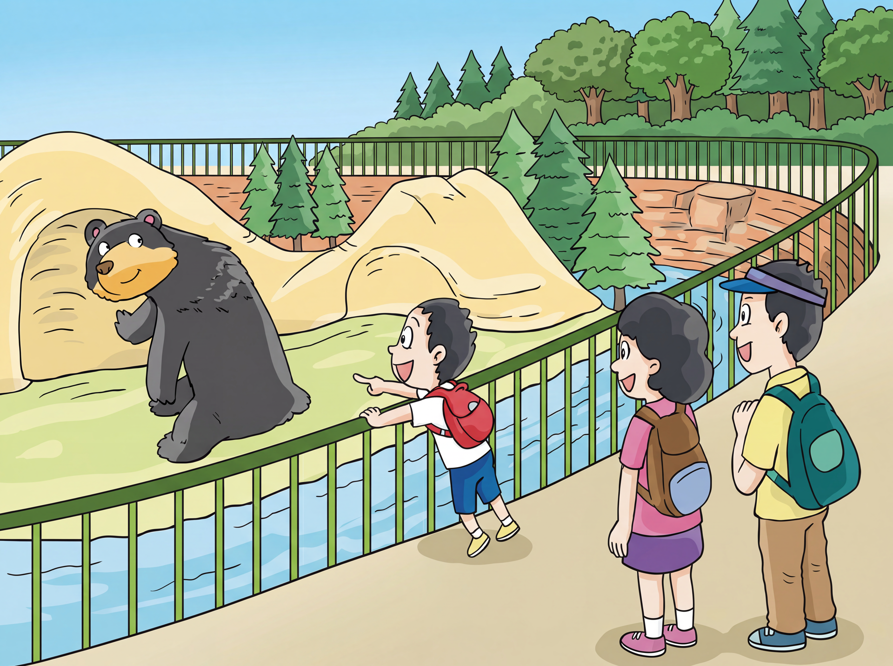
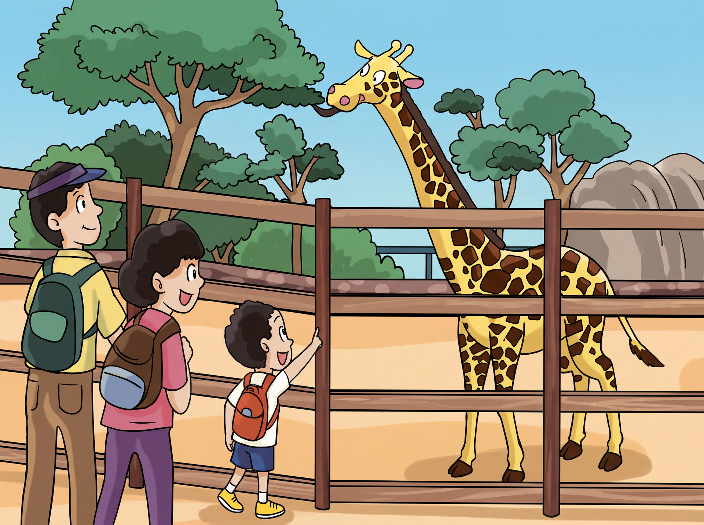

0:00
把教材，
接成自动化产线。
邵笛珂 / AI 自动化方案设计
成本降低 60%以上效率提高 70%
用户确认的项目结果教材原页 → 动态分镜 → 真实成片译林版二上 · U3 Animals at the Zoo
5幕镜头


Look at the bear.已有参考图 · 第二幕
It has a long neck.已有参考图 · 第三幕
亲自走一遍制作链路。
本地模拟 · 不调用真实生成服务
当前：选择教材
01 / 07教材识读
设计分镜
生成画面
提升画质
拼接画面
配音配乐
成片
选择教材原页
选用教材原图
请先选择教材，再开始识读
待人工确认
待开始
查看本步的完整产物与制作说明
把审核，留在关键处。
每个环节都可预览效果，仅在关键处人工确认。需要时随时返回修改。
人工审核情景、角色、运动和对白，分别核对。
查看每步的输入、产出与制作要点
自动化负责环节接力，人工在关键处审核、修正与放行。按需查看各阶段的输入、输出与检查重点。
四道制作审核 + 成品品检展开查看各节点，AI 负责生成，人工决定放行
加载中…
查看案例投入与数据口径
约 5 分钟仅指约 5 个并行任务的视频生成环节；不含人工审核与返修。费用为该 5 镜头案例的制作记录，不是含人工的全成本。
- 要解决的问题
- 教材理解、分镜、画面与后期彼此分散，每份任务都要重新组织。要持续供片，需要降低重复操作和环节之间的衔接成本。
- 我主导的设计
- 设计 AI 自动化方案，打通教材解析、分镜、生成与后期；将脚本与提示词封装为 Skill，设置审核与返修节点，让产线可以持续执行。
- 沉淀下来的价值
- 把一次性的制作经验沉淀为可复用流程：重复工作交给自动化，团队集中判断内容、处理异常和验收成片，支撑更低成本、更高效率的持续生产。
让下一份教材，也有章可循。
把教材约束写进脚本与提示词 Skill。先看这份教材如何拆成五幕，再查看每一幕的参考图、运镜和台词。
输入
展开脚本 Skill：固定规则与风格约束
加载中…
固定风格
加载中…
生成结果
查看五幕故事结构
故事结构
| 幕 | 结构 | 场景 | 参考图 | 镜头 | 情绪 | 教材台词 |
|---|
逐幕看脚本
加载中…
自动化接住重复工作。
团队把精力留给内容与判断。